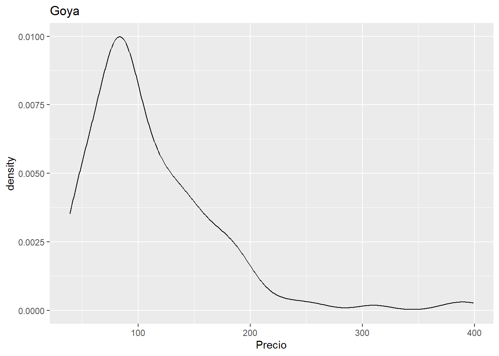

library(ggplot2)PRACTICA PEDRO DOMINGUEZ
Cargar los datos en un dataframe llamado: airbnb
airbnb<-read.csv('data//airbnb.csv',sep = ',', stringsAsFactors = T)Mostrar las primeras 6 filas del dataframe
airbnb[1:6,] Zipcode Neighbourhood.Cleansed Property.Type Room.Type Accommodates
1 28004 Universidad Apartment Private room 2
2 28004 Universidad Apartment Entire home/apt 6
3 28004 Universidad Apartment Entire home/apt 3
4 28004 Universidad Loft Entire home/apt 3
5 28015 Universidad Apartment Entire home/apt 5
6 28004 Universidad Apartment Entire home/apt 2
Bathrooms Bedrooms Beds Bed.Type
1 2 1 1 Real Bed
2 1 3 5 Real Bed
3 1 2 2 Real Bed
4 2 1 1 Real Bed
5 1 1 1 Real Bed
6 1 0 1 Real Bed
Amenities
1 TV,Wireless Internet,Kitchen,Pets allowed,Pets live on this property,Buzzer/wireless intercom,Heating,Suitable for events,Washer,First aid kit,Essentials,Lock on bedroom door,Iron
2 TV,Internet,Wireless Internet,Air conditioning,Kitchen,Indoor fireplace,Heating,Family/kid friendly,Washer,Dryer,Smoke detector,Carbon monoxide detector,Essentials,Shampoo
3 TV,Internet,Wireless Internet,Air conditioning,Kitchen,Doorman,Heating,Family/kid friendly,Washer,Essentials,Shampoo,Hangers,Hair dryer,Iron,Laptop friendly workspace
4 TV,Internet,Wireless Internet,Air conditioning,Kitchen,Pets allowed,Breakfast,Elevator in building,Indoor fireplace,Buzzer/wireless intercom,Heating,Washer,Essentials,Shampoo,Hangers,Hair dryer,Iron,Laptop friendly workspace,translation missing: en.hosting_amenity_49,translation missing: en.hosting_amenity_50
5 TV,Wireless Internet,Air conditioning,Kitchen,Smoking allowed,Pets allowed,Elevator in building,Heating,Family/kid friendly,Washer,Essentials,Iron
6 TV,Cable TV,Internet,Wireless Internet,Air conditioning,Wheelchair accessible,Kitchen,Doorman,Elevator in building,Buzzer/wireless intercom,Heating,Washer,Smoke detector,Carbon monoxide detector,First aid kit,Safety card,Fire extinguisher,Essentials,Shampoo,24-hour check-in,Hangers,Hair dryer,Iron,Laptop friendly workspace,Self Check-In,Doorman Entry
Square.Feet Price Review.Scores.Rating
1 NA 35 NA
2 NA 92 96
3 NA 55 91
4 NA 60 100
5 538 75 90
6 NA 55 95Renombrar las columnas de la siguiente forma:
| Nombre original | Nuevo nombre |
|---|---|
| Zipcode | CodigoPostal |
| Neighbourhood.Cleansed | Barrio |
| Property.Type | TipoPropiedad |
| Room.Type | TipoAlquiler |
| Accommodates | MaxOcupantes |
| Bathrooms | NumBanyos |
| Bedrooms | NumDormitorios |
| Beds | NumCamas |
| Bed.Type | TipoCama |
| Amenities | Comodidades |
| Square.Feet | PiesCuadrados |
| Price | Precio |
| Review.Scores.Rating | Puntuacion |
colnames(airbnb)<-c("CodigoPostal","Barrio","TipoPropiedad","TipoAlquiler","MaxOcupantes","NumBanyos",
"NumDormitorios","NumCamas","TipoCama","Comodidades","PiesCuadrados","Precio","Puntuacion")Crea una nueva columna llamada MetrosCuadrados a partir de la columna PiesCuadrados.
Ayuda: 1 pie cuadrado son 0,092903 metros cuadrdados
airbnb$MetrosCuadrados <- airbnb$PiesCuadrados*0.092903Miremos el código postal. Es una variable con entradas erroneas. Hay valores como ’‘,’-’ y ‘28’ que deberían ser considerados como NA. Así mismo también debería ser NA todos los que no compiencen por 28, ya que estamos con códigos postales de Madrid
El código postal 28002, 28004 y 28051 tienen entradas repetidas. Por ejemplo las entradas 28002 deberían ir dnetro de 28002
El codigo 2804 debería ser 28004, 2805 deberia ser 28005 y 2815 juncto con 2815 debería ser 28015
Limpia los datos de la columna Codigo Postal
#limpieza_1 `` '-' y '28' son NA
limpieza_1 <- which((airbnb$CodigoPostal %in% c('','-','28')) )
airbnb[limpieza_1,'CodigoPostal'] <- NA#limpieza 2 NA todos los que no compiencen por 28
limpieza_2 <- which(!(substring(airbnb$CodigoPostal,1,2) == '28') )
airbnb[limpieza_2,'CodigoPostal'] <- NA#limpieza 3 todo lo contenga 28002 debe ser solo 28002
limpieza_3 <- which(grepl('28002',airbnb$CodigoPostal))
airbnb[limpieza_3,'CodigoPostal'] <- '28002'#limpieza 4 todo lo contenga 28004 debe ser solo 28004
limpieza_4 <- which(grepl('28004',airbnb$CodigoPostal))
airbnb[limpieza_4,'CodigoPostal'] <- '28004'#limpieza 5 todo lo contenga 28051 debe ser solo 28051
limpieza_5 <- which(grepl('28051',airbnb$CodigoPostal))
airbnb[limpieza_5,'CodigoPostal'] <- '28051'#limpieza 6 El codigo 2804 debería ser 28004
limpieza_6 <- which(airbnb$CodigoPostal == '2804')
airbnb[limpieza_6,'CodigoPostal'] <- '28004'#limpieza 7 El codigo 2805 debería ser 28005
limpieza_7 <- which(airbnb$CodigoPostal == '2805')
airbnb[limpieza_7,'CodigoPostal'] <- '28005'#limpieza 8 El codigo 2815 debería ser 28015
limpieza_8 <- which(airbnb$CodigoPostal == '2815')
airbnb[limpieza_8,'CodigoPostal'] <- '28015'#limpieza 9 Esta limpieza es adicional ya que se ha observado que existe
# el codigo 280013 que deberia de ser el 28013
limpieza_9 <- which(airbnb$CodigoPostal == '280013')
airbnb[limpieza_9,'CodigoPostal'] <- '28013'Una vez limpios los datos ¿Cuales son los códigos postales que tenemos?
tabla_cp <- table(droplevels(airbnb$CodigoPostal))
tabla_cp
28001 28002 28003 28004 28005 28006 28007 28008 28009 28010 28011 28012 28013
231 171 185 1795 1195 218 206 338 216 384 250 2060 1020
28014 28015 28016 28017 28018 28019 28020 28021 28022 28023 28024 28025 28026
630 601 76 107 43 200 192 58 30 23 44 123 93
28027 28028 28029 28030 28031 28032 28033 28034 28035 28036 28037 28038 28039
122 263 110 73 27 33 89 45 59 67 65 77 160
28040 28041 28042 28043 28044 28045 28046 28047 28048 28049 28050 28051 28052
16 63 90 103 19 495 32 67 1 3 58 17 1
28053 28054 28055 28056 28058 28060 28094 28105 28850
85 12 12 1 1 1 1 1 1 ¿Cuales son los 5 códigos postales con más entradas? ¿Y con menos? ¿Cuantas entradas tienen?
top_5_cp <- sort(tabla_cp, decreasing = TRUE)[1:5]PD: Top 5 codigos postales y sus numeros de entradas
top_5_cp
28012 28004 28005 28013 28014
2060 1795 1195 1020 630 bottom_5_cp <- sort(tabla_cp, decreasing = FALSE)[1:5]PD: Bottom 5 codigos postales y sus numeros de entradas
bottom_5_cp
28048 28052 28056 28058 28060
1 1 1 1 1 ¿Cuales son los barrios que hay en el código postal 28012?¿Cuantas entradas hay en cada uno de esos barrios para el codigo postal 28012?
cp_28012 <- which(airbnb$CodigoPostal == '28012')
tabla_cp_28012 <- table(droplevels(airbnb[cp_28012,'Barrio']))
tabla_cp_28012
Acacias Arapiles Atocha Cortes Delicias
13 1 1 216 1
Embajadores Goya Palacio Palos de Moguer Sol
1449 1 27 46 301
Universidad
4 ¿Cuantos barrios hay en todo el dataset airbnb? ¿Cuales son?
tabla_barrios <- table(droplevels(airbnb$Barrio))PD: Numero de barrios en el dataset:
nrow(tabla_barrios)[1] 125PD: Cuales son los barrios:
tabla_barrios
Abrantes Acacias
18 145
Adelfas Aeropuerto
51 6
Aguilas Alameda de Osuna
15 24
Almagro Almenara
155 62
Almendrales Aluche
45 45
Ambroz Amposta
12 5
Apostol Santiago Arapiles
15 182
Aravaca Arcos
16 18
Argüelles Atocha
264 18
Bellas Vistas Berruguete
79 67
Buenavista Butarque
22 6
Campamento Canillas
22 42
Canillejas Cármenes
7 30
Casa de Campo Casco Histórico de Barajas
75 28
Casco Histórico de Vallecas Casco Histórico de Vicálvaro
40 20
Castellana Castilla
97 26
Castillejos Chopera
81 112
Ciudad Jardín Ciudad Universitaria
55 34
Colina Comillas
16 59
Concepción Corralejos
46 5
Cortes Costillares
750 32
Cuatro Caminos Cuatro Vientos
120 3
Delicias El Goloso
126 3
El Plantío El Viso
3 45
Embajadores Entrevías
1844 13
Estrella Fontarrón
28 24
Fuente del Berro Fuentelareina
68 3
Gaztambide Goya
142 229
Guindalera Hellín
187 5
Hispanoamérica Ibiza
72 105
Imperial Jerónimos
89 90
Justicia La Paz
785 16
Legazpi Lista
37 129
Los Angeles Los Rosales
16 28
Lucero Marroquina
62 12
Media Legua Mirasierra
17 18
Moscardó Niño Jesús
34 26
Nueva España Numancia
60 58
Opañel Orcasitas
57 2
Orcasur Pacífico
8 138
Palacio Palomas
1083 12
Palomeras Bajas Palomeras Sureste
33 15
Palos de Moguer Pavones
262 4
Peñagrande Pilar
39 26
Pinar del Rey Piovera
47 12
Portazgo Pradolongo
19 14
Prosperidad Pueblo Nuevo
98 41
Puerta Bonita Puerta del Angel
38 199
Quintana Recoletos
45 172
Rejas Rios Rosas
20 104
Rosas Salvador
4 13
San Andrés San Cristobal
21 8
San Diego San Fermín
80 32
San Isidro San Juan Bautista
85 26
San Pascual Santa Eugenia
18 4
Simancas Sol
45 940
Timón Trafalgar
16 315
Universidad Valdeacederas
1358 48
Valdefuentes Valdemarín
55 4
Valdezarza Vallehermoso
20 60
Valverde Ventas
45 78
Vinateros Vista Alegre
17 74
Zofío
9 ¿Cuales son los 5 barrios que tienen mayor número entradas?
# top 5 codigos postales y sus numeros de entradas
top_5_barrios <- sort(tabla_barrios, decreasing = TRUE)[1:5]
top_5_barrios
Embajadores Universidad Palacio Sol Justicia
1844 1358 1083 940 785 ¿Cuantos Tipos de Alquiler diferentes hay? ¿Cuales son? ¿Cuantas entradas en el dataframe hay por cada tipo?
tabla_tipos_alquiler <- table(droplevels(airbnb$TipoAlquiler))PD: Numero de tipos de alquiler en el dataset:
nrow(tabla_tipos_alquiler)[1] 3PD: Cuales son los Tipos de barrio y cuantas entradas tienen:
tabla_tipos_alquiler
Entire home/apt Private room Shared room
7903 5113 191 Muestra el diagrama de cajas del precio para cada uno de los diferentes Tipos de Alquiler
ggplot(data=airbnb,aes(x=TipoAlquiler, y=Precio,color=TipoAlquiler))+geom_boxplot()+scale_color_discrete(name="Precio")Warning: Removed 9 rows containing non-finite values (`stat_boxplot()`).Cual es el precio medio de alquiler de cada uno, la diferencia que hay ¿es estadísticamente significativa? ¿Con que test lo comprobarías?
PD: Precio medio segun el tipo de alquiler:
aggregate(Precio ~ TipoAlquiler, data = airbnb, FUN = mean) TipoAlquiler Precio
1 Entire home/apt 87.29661
2 Private room 34.25514
3 Shared room 29.85340PD: Antes de responder a las preguntas vamos a comprobar si los diferentes grupos siguen una distribucion gaussiana para ello vamos a realizar el test de saphiro a cada uno de los grupos
for (v in levels(airbnb$TipoAlquiler)){
datos <- airbnb$Precio[airbnb$TipoAlquiler==v]
if(length(datos) > 5000){
datos <- sample(datos, 5000)
}
print(paste("Tipo de alquiler:", v," pvalue:", shapiro.test(datos)$p.value))
}[1] "Tipo de alquiler: Entire home/apt pvalue: 3.56340416799972e-72"
[1] "Tipo de alquiler: Private room pvalue: 1.29906895397011e-84"
[1] "Tipo de alquiler: Shared room pvalue: 4.51672121600842e-24"PD:Al ser todos los pvalue menores que 0.05 podemos rechazar la hipotesis nula, es decir las distribuciones no son normales. Como los datos no siguen una distribucion normal utilizamos el test kruskal-Wallis
kruskal.test(Precio ~ TipoAlquiler, data = airbnb)
Kruskal-Wallis rank sum test
data: Precio by TipoAlquiler
Kruskal-Wallis chi-squared = 7235.6, df = 2, p-value < 2.2e-16PD:Como el pvalue es muy pequeno podemos indicar que hay diferencias estadisticamentes significaticas en las medianas entre al menos uno de los grupos .
Filtra el dataframe cuyos tipo de alquiler sea ‘Entire home/apt’ y guardalo en un dataframe llamado airbnb_entire. Estas serán las entradas que tienen un alquiler del piso completo.
airbnb_entire <- airbnb[which(airbnb$TipoAlquiler == 'Entire home/apt'),]¿Cuales son los 5 barrios que tienen un mayor número de apartamentos enteros en alquiler? Nota: Mirar solo en airbnb_entire. A partir de este punto y hasta que se diga lo contrario partiremos de airbnb_entire.
tabla_barrios_ent <- table(droplevels(airbnb_entire$Barrio))
top_5_barrios_ent <- sort(tabla_barrios_ent, decreasing = TRUE)[1:5]PD:Top 5 barrios con mayor numero de apartamentos enteros en alquiler
top_5_barrios_ent
Embajadores Universidad Palacio Sol Cortes
1228 984 769 701 574 ¿Cuales son los 5 barrios que tienen un mayor precio medio de alquiler para apartamentos enteros (es decir, del dataframe airbnb_entire)? ¿Cual es su precio medio?
Ayuda: Usa la función aggregate aggregate(.~colname,df,mean,na.rm=TRUE)
precio_barrio <- aggregate(Precio ~ Barrio, data = airbnb_entire, FUN = mean)
top_5_precio_barrio <- head(precio_barrio[order(-precio_barrio$Precio),], 5)PD: Top 5 barrios con mayor precio medio de alquiler para apartamentos enteros en alquiler:
top_5_precio_barrio Barrio Precio
77 Palomas 309.7500
50 Fuentelareina 180.0000
93 Recoletos 161.9254
43 El Plantío 150.0000
30 Castellana 141.3889¿Cuantos apartamentos hay en cada uno de esos barrios?
subset(tabla_barrios_ent, names(tabla_barrios_ent) %in% top_5_precio_barrio$Barrio)
Castellana El Plantío Fuentelareina Palomas Recoletos
73 1 2 4 135 Mostrar una dataframe con el nombre del barrio, el precio y el número de entradas.
Ayuda: Podeis crear un nuevo dataframe con las columnas “Barrio” y “Freq” que contenga el número de entradas en cada barrio y hacer un merge con el dataframe del punto anterior.
df_barrios_ent <- as.data.frame(tabla_barrios_ent)
names(df_barrios_ent) <- c("Barrio", "Num_Entradas")
Barrio_ent_precio <- merge(df_barrios_ent, precio_barrio, by = "Barrio")
Barrio_ent_precio Barrio Num_Entradas Precio
1 Abrantes 3 46.00000
2 Acacias 61 68.16393
3 Adelfas 33 68.72727
4 Aeropuerto 2 38.00000
5 Aguilas 2 54.50000
6 Alameda de Osuna 4 138.75000
7 Almagro 97 109.18557
8 Almenara 25 65.68000
9 Almendrales 18 77.50000
10 Aluche 9 55.88889
11 Ambroz 2 34.50000
12 Apostol Santiago 5 96.60000
13 Arapiles 98 69.62245
14 Aravaca 9 66.33333
15 Arcos 4 100.50000
16 Argüelles 143 89.57343
17 Atocha 9 71.44444
18 Bellas Vistas 45 51.77778
19 Berruguete 35 53.85714
20 Buenavista 12 57.91667
21 Butarque 1 42.00000
22 Campamento 9 45.55556
23 Canillas 15 105.80000
24 Canillejas 3 91.66667
25 Cármenes 8 78.00000
26 Casa de Campo 41 98.85366
27 Casco Histórico de Barajas 8 141.25000
28 Casco Histórico de Vallecas 18 61.11111
29 Casco Histórico de Vicálvaro 8 73.87500
30 Castellana 73 141.38889
31 Castilla 21 68.66667
32 Castillejos 44 88.70455
33 Chopera 34 55.02941
34 Ciudad Jardín 32 87.62500
35 Ciudad Universitaria 13 138.30769
36 Colina 7 64.42857
37 Comillas 21 56.66667
38 Concepción 16 61.93750
39 Cortes 574 94.39373
40 Costillares 13 95.07692
41 Cuatro Caminos 72 76.65278
42 Delicias 51 66.00000
43 El Plantío 1 150.00000
44 El Viso 24 76.37500
45 Embajadores 1228 73.70497
46 Entrevías 4 56.25000
47 Estrella 3 92.66667
48 Fontarrón 5 51.80000
49 Fuente del Berro 38 70.31579
50 Fuentelareina 2 180.00000
51 Gaztambide 61 86.68852
52 Goya 142 111.33803
53 Guindalera 82 76.98780
54 Hellín 1 42.00000
55 Hispanoamérica 52 104.44231
56 Ibiza 64 102.62500
57 Imperial 42 61.42857
58 Jerónimos 62 131.82258
59 Justicia 534 98.25468
60 La Paz 3 65.33333
61 Legazpi 14 79.28571
62 Lista 72 90.11111
63 Los Angeles 5 69.40000
64 Los Rosales 2 75.00000
65 Lucero 13 68.30769
66 Marroquina 2 50.00000
67 Media Legua 10 72.10000
68 Mirasierra 7 101.28571
69 Moscardó 18 56.05556
70 Niño Jesús 15 89.23077
71 Nueva España 42 127.30952
72 Numancia 34 60.58824
73 Opañel 10 51.60000
74 Orcasur 1 45.00000
75 Pacífico 62 89.72581
76 Palacio 769 93.30599
77 Palomas 4 309.75000
78 Palomeras Bajas 10 61.10000
79 Palomeras Sureste 4 31.50000
80 Palos de Moguer 135 73.31852
81 Pavones 1 48.00000
82 Peñagrande 11 127.63636
83 Pilar 10 62.50000
84 Pinar del Rey 9 79.88889
85 Piovera 3 85.00000
86 Portazgo 1 55.00000
87 Pradolongo 3 61.33333
88 Prosperidad 49 79.46939
89 Pueblo Nuevo 13 67.46154
90 Puerta Bonita 14 88.00000
91 Puerta del Angel 77 59.67532
92 Quintana 17 65.00000
93 Recoletos 135 161.92537
94 Rejas 11 64.18182
95 Rios Rosas 60 83.00000
96 Salvador 5 66.40000
97 San Andrés 12 50.91667
98 San Cristobal 2 56.50000
99 San Diego 32 44.34375
100 San Fermín 8 63.50000
101 San Isidro 39 76.10256
102 San Juan Bautista 13 75.53846
103 San Pascual 7 72.42857
104 Santa Eugenia 2 47.00000
105 Simancas 21 57.14286
106 Sol 701 100.75036
107 Timón 5 72.20000
108 Trafalgar 223 98.57848
109 Universidad 984 79.39674
110 Valdeacederas 25 67.36000
111 Valdefuentes 24 84.25000
112 Valdemarín 2 70.50000
113 Valdezarza 3 53.33333
114 Vallehermoso 33 92.39394
115 Valverde 19 71.57895
116 Ventas 26 50.03846
117 Vinateros 2 102.50000
118 Vista Alegre 22 59.45455
119 Zofío 4 48.00000Partiendo del dataframe anterior, muestra los 5 barrios con mayor precio, pero que tengan más de 100 entradas de alquiler.
#Filtramos los barrios con mas de 100 entradas
Barrio_100ent_precio <- subset(Barrio_ent_precio, Num_Entradas > 100)
top_5_Barrio_100ent_precio <- head(Barrio_100ent_precio[order(-Barrio_100ent_precio$Precio),], 5)PD: Top 5 barrios con mayor precio medio de alquiler para apartamentos con mas de 100 entradas”)
top_5_Barrio_100ent_precio Barrio Num_Entradas Precio
93 Recoletos 135 161.92537
52 Goya 142 111.33803
106 Sol 701 100.75036
108 Trafalgar 223 98.57848
59 Justicia 534 98.25468Dibuja el diagrama de densidad de distribución de los diferentes precios. Serían 5 gráficas, una por cada barrio.
for (v in droplevels(top_5_Barrio_100ent_precio$Barrio)){
filtro_barrio <- subset(airbnb_entire, Barrio == v)
print(ggplot(data=filtro_barrio) + aes(x = Precio) + geom_density() + labs(title = v ))
}Warning: Removed 1 rows containing non-finite values (`stat_density()`).
Calcula el tamaño medio, en metros cuadrados, para los 5 barrios anteriores y muestralo en el mismo dataframe junto con el precio y número de entradas.
#Aniadimos nueva columna
top_5_Barrio_100ent_precio$MetrosCuadrados <- NA
for (v in droplevels(top_5_Barrio_100ent_precio$Barrio)){
filtro_barrio <- subset(airbnb_entire, Barrio == v)
m2_barrio <- aggregate(MetrosCuadrados ~ Barrio, data = filtro_barrio, FUN = mean)
top_5_Barrio_100ent_precio$MetrosCuadrados[top_5_Barrio_100ent_precio$Barrio == v] <- m2_barrio$MetrosCuadrados
}PD: Se anade al dataframe la columna con la media de los metros cuadrados
top_5_Barrio_100ent_precio Barrio Num_Entradas Precio MetrosCuadrados
93 Recoletos 135 161.92537 26.66316
52 Goya 142 111.33803 51.68504
106 Sol 701 100.75036 45.61692
108 Trafalgar 223 98.57848 29.30426
59 Justicia 534 98.25468 28.52669Dibuja el diagrama de densidad de distribución de los diferentes tamaños de apartamentos. Serían 5 gráficas, una por cada barrio.
for (v in droplevels(top_5_Barrio_100ent_precio$Barrio)){
filtro_barrio <- subset(airbnb_entire, Barrio == v)
print(ggplot(data=filtro_barrio,aes(x = MetrosCuadrados)) + geom_density() + labs(title = v ))
}Warning: Removed 132 rows containing non-finite values (`stat_density()`).Warning: Removed 139 rows containing non-finite values (`stat_density()`).Warning: Removed 641 rows containing non-finite values (`stat_density()`).Warning: Removed 216 rows containing non-finite values (`stat_density()`).Warning: Removed 517 rows containing non-finite values (`stat_density()`).Esta claro que las medias de metros cuadrados de cada uno de estos 5 barrios parecen ser diferentes, pero ¿son estadísticamente diferentes? ¿Que test habría que usar para comprobarlo?
#creamos un dataset solo con los barrios que nos interesan
airbnv_entire_top5 <- subset(airbnb_entire, Barrio %in% droplevels(top_5_Barrio_100ent_precio$Barrio))PD:Ya que a simple vista de los graficos de densidad antes calculados se observa que la media no sigue una distribucion gausiana. Por lo que vamos a usar el test de kruskal-wallis
kruskal.test(MetrosCuadrados~Barrio, data=airbnv_entire_top5)
Kruskal-Wallis rank sum test
data: MetrosCuadrados by Barrio
Kruskal-Wallis chi-squared = 1.882, df = 4, p-value = 0.7574PD:Al salir el test de Kruskal-wallis un p-value mayor que 0.05 no podemos descartar la hipotesis nula de que las medias son iguales. Por lo que e stadisticamente hablando no podemos decir que son diferentes.
Para únicamente los pisos de alquiler en el barrio de Sol:
barrio_sol<-subset(airbnb_entire,Barrio=="Sol")Calcular un modelo lineal que combine alguna de estas variables: * NumBanyos * NumDormitorios * MaxOcupantes * MetrosCuadrados
#calculamos el modelo lineal entre numero de dormitorios y maximos ocupantes
model <- lm(data=barrio_sol, formula= MaxOcupantes ~ NumDormitorios)
summary(model)
Call:
lm(formula = MaxOcupantes ~ NumDormitorios, data = barrio_sol)
Residuals:
Min 1Q Median 3Q Max
-3.6052 -0.9541 0.0459 0.4955 7.3948
Coefficients:
Estimate Std. Error t value Pr(>|t|)
(Intercept) 2.40373 0.08842 27.19 <2e-16 ***
NumDormitorios 1.55038 0.05023 30.86 <2e-16 ***
---
Signif. codes: 0 '***' 0.001 '**' 0.01 '*' 0.05 '.' 0.1 ' ' 1
Residual standard error: 1.339 on 699 degrees of freedom
Multiple R-squared: 0.5768, Adjusted R-squared: 0.5762
F-statistic: 952.6 on 1 and 699 DF, p-value: < 2.2e-16#Pintamos los datos y el modelo
# Agregar las predicciones del modelo al conjunto de datos original
barrio_sol$predicciones <- predict(model)
# Graficar los puntos y la línea usando ggplot2
ggplot(barrio_sol, aes(x = NumDormitorios, y = MaxOcupantes)) +
geom_point() + # Agregar puntos
geom_line(aes(y = predicciones), color = "blue") # Agregar líneaPrimero calculamos la correlación para ver como se relacionan estas variables entre sí.
cor(barrio_sol[,c("NumBanyos", "NumDormitorios", "MaxOcupantes", "MetrosCuadrados")],use="pairwise.complete.obs") NumBanyos NumDormitorios MaxOcupantes MetrosCuadrados
NumBanyos 1.0000000 0.6761906 0.6578162 0.4820549
NumDormitorios 0.6761906 1.0000000 0.7594598 0.5684521
MaxOcupantes 0.6578162 0.7594598 1.0000000 0.4286233
MetrosCuadrados 0.4820549 0.5684521 0.4286233 1.0000000Se observa que la correlación entre el número de dormitorios y los metros cuadrados es sorprendentemente baja. ¿Son de fiar esos números?
PD: En el dataset se observa que hay muchos apartamentos con metros cuadrados igual a 0 cosa que es imposible por lo que no son fiables esos datos
Mediante un histograma o curvas de densidad podemos descartar números que notienen sentido en el dataframe barrio_sol, para tener una matriz de correlación que tenga mayor sentido.
for (i in c("NumBanyos","NumDormitorios","MaxOcupantes", "MetrosCuadrados")){
print(ggplot(data=barrio_sol, aes(x= .data[[i]]))+ geom_histogram() + labs(title = i ))
}`stat_bin()` using `bins = 30`. Pick better value with `binwidth`.`stat_bin()` using `bins = 30`. Pick better value with `binwidth`.`stat_bin()` using `bins = 30`. Pick better value with `binwidth`.`stat_bin()` using `bins = 30`. Pick better value with `binwidth`.Warning: Removed 641 rows containing non-finite values (`stat_bin()`).PD:De los histogramas deducimos lo siguiente: NumBanyos la gran mayoria de los apartamentos tienen 1 banyo. NumDormitorios hay muchos apartamentos que tienen 0 dormitorios, no podemos descartar estos valores. MaxOcupantes no se observa nada en especial salvo que la gran mayoria de apartamentos tienen una max ocupacion de 4. MetrosCuadrados, se observa que hay muchos datos con 0 metros cuadrados con un valor de 0 cosa que no es posible.
#Pasamos a limpiar estos valores
limpieza_sol_1 <- which((barrio_sol$MetrosCuadrados %in% c('0')) )
barrio_sol[limpieza_sol_1,'MetrosCuadrados'] <- NAUna vez que hayamos filtrado los datos correspondientes calcular el valor o la combinación de valores que mejor nos permite obtener el precio de un inmueble. ¿Que variable es más fiable para conocer el precio de un inmueble, el número de habitaciones o los metros cuadrados?
#Primero obtenemos la correlaciones entre variables
cor(barrio_sol[,c("Precio","NumBanyos", "NumDormitorios", "MaxOcupantes", "MetrosCuadrados")],use="pairwise.complete.obs") Precio NumBanyos NumDormitorios MaxOcupantes MetrosCuadrados
Precio 1.0000000 0.6474419 0.6542553 0.6578409 0.7402007
NumBanyos 0.6474419 1.0000000 0.6761906 0.6578162 0.5712130
NumDormitorios 0.6542553 0.6761906 1.0000000 0.7594598 0.7717458
MaxOcupantes 0.6578409 0.6578162 0.7594598 1.0000000 0.7108265
MetrosCuadrados 0.7402007 0.5712130 0.7717458 0.7108265 1.0000000PD: Obtenemos la mejor correlacion entre el precio y los metros cuadrados por lo que la consideramos la mas fiables y calcularemos un modelo del precio segun esta variable
model_pre_m2 <- lm(data=barrio_sol, formula= Precio ~ MetrosCuadrados)
summary(model_pre_m2)
Call:
lm(formula = Precio ~ MetrosCuadrados, data = barrio_sol)
Residuals:
Min 1Q Median 3Q Max
-61.175 -21.635 -6.466 20.533 128.270
Coefficients:
Estimate Std. Error t value Pr(>|t|)
(Intercept) 46.5709 10.3852 4.484 6.55e-05 ***
MetrosCuadrados 0.8342 0.1229 6.786 4.80e-08 ***
---
Signif. codes: 0 '***' 0.001 '**' 0.01 '*' 0.05 '.' 0.1 ' ' 1
Residual standard error: 38.53 on 38 degrees of freedom
(661 observations deleted due to missingness)
Multiple R-squared: 0.5479, Adjusted R-squared: 0.536
F-statistic: 46.05 on 1 and 38 DF, p-value: 4.795e-08Responde con su correspondiente margen de error del 95%, ¿cuantos euros incrementa el precio del alquiler por cada metro cuadrado extra del piso?
confint(model_pre_m2, level = 0.95) 2.5 % 97.5 %
(Intercept) 25.5471054 67.594737
MetrosCuadrados 0.5853331 1.083027PD: El incremento de precio por metro cuadrado es 0.8342 euros/m2 con un intervalo de confianza del 95% de [0.5853331,1.083027]euros/m2
Responde con su correspondiente margen de error del 95%, ¿cuantos euros incrementa el precio del alquiler por cada habitación?
#modelo del precio segun habitacion
model_pre_dor <- lm(data=barrio_sol, formula= Precio ~ NumDormitorios)
summary(model_pre_dor)
Call:
lm(formula = Precio ~ NumDormitorios, data = barrio_sol)
Residuals:
Min 1Q Median 3Q Max
-206.225 -22.676 -4.312 16.416 263.960
Coefficients:
Estimate Std. Error t value Pr(>|t|)
(Intercept) 52.584 2.568 20.48 <2e-16 ***
NumDormitorios 33.364 1.459 22.87 <2e-16 ***
---
Signif. codes: 0 '***' 0.001 '**' 0.01 '*' 0.05 '.' 0.1 ' ' 1
Residual standard error: 38.9 on 699 degrees of freedom
Multiple R-squared: 0.4281, Adjusted R-squared: 0.4272
F-statistic: 523.1 on 1 and 699 DF, p-value: < 2.2e-16confint(model_pre_dor, level = 0.95) 2.5 % 97.5 %
(Intercept) 47.54299 57.62561
NumDormitorios 30.50004 36.22803PD: El incremento de precio por numero de dormitorios es de 33.368 euros/habitacion con un intervalo de confianza del 95% de [30.50004,36.22803]euros/m2
¿Cual es la probabilidad de encontrar, en el barrio de Sol, un apartamento en alquiler con 3 dormitorios? ¿Cual es el intervalo de confianza de esa probabilidad?
Num_apar_sol <- nrow(barrio_sol)
Num_apar_3hab <- nrow(subset(barrio_sol, NumDormitorios == 3))
Probabilidad_3hab <- Num_apar_3hab/Num_apar_sol
binom.test(Num_apar_3hab,Num_apar_sol,Probabilidad_3hab)
Exact binomial test
data: Num_apar_3hab and Num_apar_sol
number of successes = 55, number of trials = 701, p-value = 1
alternative hypothesis: true probability of success is not equal to 0.07845934
95 percent confidence interval:
0.0596506 0.1009033
sample estimates:
probability of success
0.07845934 PD: La probabilidad de econtrar un apartamento de 3 habitaciones es de 7.85% con un intervalo de confianza del 95% para valores entre [5.96,10.09]%